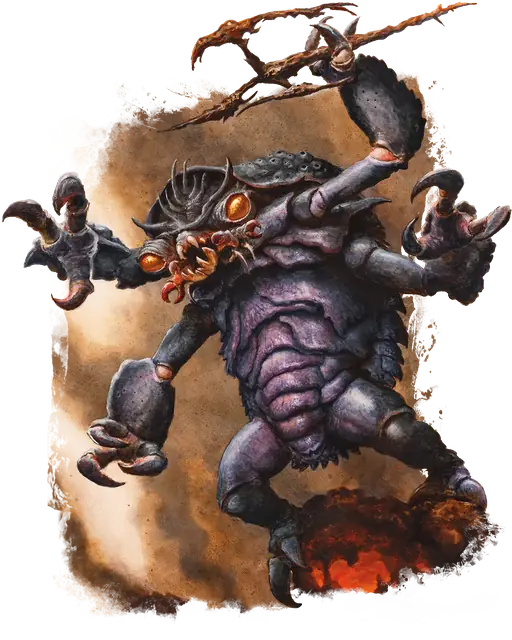

Меззолот
Mezzoloth
Среднее Исчадие (Юголот), Нейтральное Злое

Класс Защиты 18 Инициатива +3 (13)
Хиты 75 (10к8 + 30)
Скорость 40 футов
| мод | спас | ||
|---|---|---|---|
| СИЛ | 18 | +4 | +4 |
| ЛОВ | 11 | +0 | +0 |
| ТЕЛ | 16 | +3 | +3 |
| мод | спас | ||
|---|---|---|---|
| ИНТ | 7 | −2 | −2 |
| МДР | 14 | +2 | +2 |
| ХАР | 10 | +0 | +0 |
Сопротивление урону Огонь, Холод, Электричество
Иммунитеты Кислота, Яд; Отравленный
Чувства Тёмное зрение 60 футов, пассивное Восприятие 15, Слепое зрение 60 футов
Языки Бездны, Инфернальный, Телепатия 60 фт.
Опасность 5 (1 800 опыта; БВ +3)
Особенности
Восстановление исчадия. Когда меззолот умирает за пределами Геенны, его тело растворяется в ихоре и в тот же миг заново возрождается со всеми Хитами где-то в Геенне.
Сопротивление магии. Меззолот совершает с Преимуществом спасброски от заклинаний и прочих магических эффектов.
Действия
Мультиатака. Меззолот совершает две атаки Клешнями или Ртутным трезубцем в любой комбинации.
Клешни. Бросок рукопашной атаки: +7, досягаемость 5 фт. Попадание: 9 (2к4 + 4) Рубящего урона. Если цель — существо Большого размера или меньше, она становится Схваченной (Сл освобождения от захвата 14) двумя клешнями из четырёх; пока захват не окончен, она также Опутана.
Ртутный трезубец. Бросок рукопашной или дальнобойной атаки: +7, досягаемость 5 фт. или дистанция 20/60 фт. Попадание: 8 (1к8 + 4) Колющего урона плюс 10 (3к6) Силового урона. Промах или попадание: Трезубец магическим образом возвращается в клешню меззолота сразу после совершения дальнобойной атаки.
Сотворение заклинаний. Меззолот сотворяет одно из следующих заклинаний, не нуждаясь в Материальных компонентах (заклинательная характеристика — Мудрость, Сл спасброска заклинаний 13):
1/день каждое: Облако смерти, Рассеивание магии, Тьма
Бонусные действия
Телепортация. Меззолот телепортируется на расстояние вплоть до 60 футов в видимое им незанятое пространство. Он может телепортировать одно Схваченное им существо в незанятое пространство в пределах 5 футов от места назначения его телепортации.
Бонус мастерства +3
Среда обитания Геенна
Сокровища Оружейные
Меззолот
Юголот упрямства и вожделения
Меззолоты — насекомоподобные юголоты, что жаждут власти и душ, служа инфернальным владыкам. Эти алчные и жестокие юголоты действуют прямее большинства своих коварных собратьев, но недостаток изворотливости они с лихвой восполняют упорством и численностью.
Обычно меззолоты сбиваются в наёмные отряды с другими представителями своего вида. Эти отряды служат более могущественным юголотам, прочим исчадиям и зловещим магам — любому, кто посулит заманчивую награду. Меззолоты прилежно блюдут заключённые сделки и могут веками исполнять волю своего покровителя, но едва срок договора истекает — вчерашний наниматель рискует сам стать сегодняшней добычей.
Совершите бросок по таблице «Плата меццолота» для вдохновения или решите сами, какую цену меззолот запрашивает за свои услуги.
Плата меззолота
| к6 | Меззолот соглашается служить за… |
| 1 | Доступ к планарному порталу. |
| 2 | Сведения, нужные его истинному хозяину. |
| 3 | Логово, куда он сможет привести других своего вида. |
| 4 | Магическое оружие или доспехи. |
| 5 | Право разорять святыни в захваченных землях. |
| 6 | Души — будь то в виде ларв или пойманных духов. |